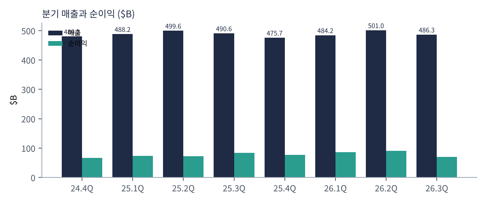
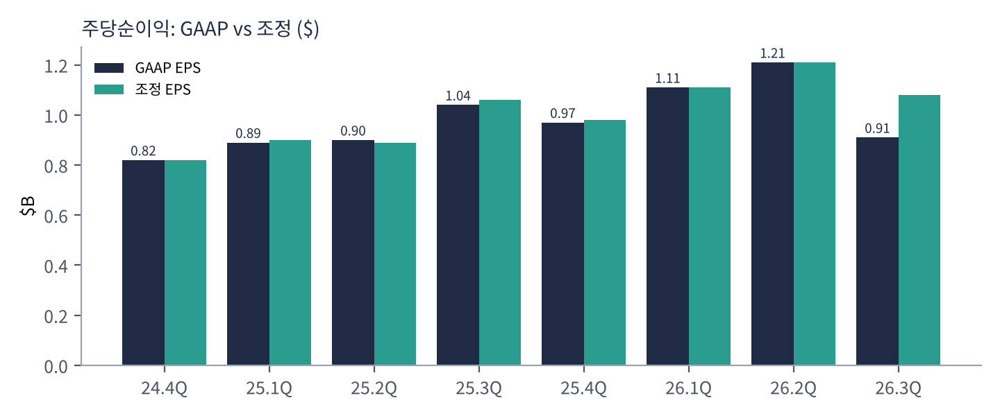
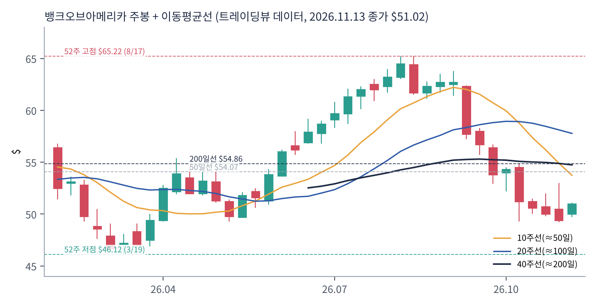
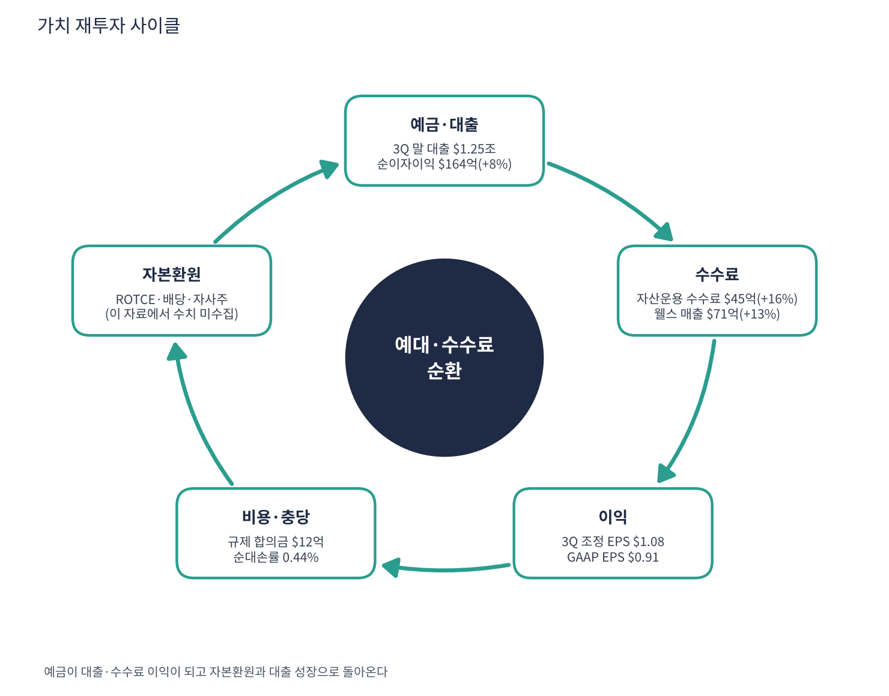

뱅크오브아메리카(BAC)는 소비자 은행, 자산관리(메릴), 기업·투자은행, 트레이딩을 하는 미국 2위권 대형 은행이다. 이 표의 매출은 이자수익과 비이자수익을 합친 총수익(스캐너)이고, 이자비용을 뺀 순수익은 3Q26 $300억이다. 3Q 순이자이익이 8% 늘었지만 규제 합의금 $12억 때문에 GAAP EPS가 $0.91로 떨어졌고, 주가는 52주 고점 대비 22% 낮은 회사다.
| 항목 | 내용 |
|---|---|
| 종목 | Bank of America (BAC) · NYSE · 금융(은행) · 본사 미국 노스캐롤라이나주 샬럿 |
| 시가총액 | 약 $3,520억 · PER 12.2배(GAAP TTM), 조정 기준 약 11.7배 · P/S 2.97배 (11/13 종가 $51.02) |
| 최근 분기(3Q26) | 순수익 $300억(+3%), 순이익 $69.3억(-17%), GAAP EPS $0.91, 조정 EPS $1.08 |
| 이자·수수료 | 순이자이익 $164억(+8%), 자산운용 수수료 +16~17%(약 $45억), 웰스 부문 매출 $71억(+13%) |
| 약한 부분 | 트레이딩 매출 $51억(-5%), 투자은행 수수료 $18억(-11%), 비이자비용 $197억(+14%) |
| 가이던스 | 순이자이익 2026년 약 +8%, 2027년 +8% 이상 |
| 다음 일정 | 4Q26 실적 2027.1.15 예정(트레이딩뷰) |
| 직책 | 인물 | 역할·특징 |
|---|---|---|
| 회장·CEO | 브라이언 모이니핸 | 소비자·웰스·상업 은행의 유기적 성장을 강조 |
| CFO | 앨러스테어 보스윅 | 순이자이익 전망과 비용을 설명 |
경영 스타일: '여러 사업의 균형으로 꾸준히 번다'. 모이니핸은 소비자 지출이 견조하다고 밝혔다. 소비자 은행은 3Q에 신규 입출금 계좌가 20만 개 늘어 31분기 연속 순증이다. 반면 AML(자금세탁방지) 관련 OCC·FinCEN 합의금 $12억을 3Q에 처리했다(법인세 비공제).
메릴·프라이빗 뱅크 고객의 87%가 디지털을 쓴다고 회사가 밝혔다. 자산운용 수수료와 웰스 매출이 두 자릿수로 늘었다.
대출·예금 성장과 순이자이익 성장을 이어가는 것이 핵심이다. 2027년에도 순이자이익 +8% 이상을 제시했다.
| 분기 | 총수익 | 순이익 | EPS | 조정 EPS | 특이 사항 |
|---|---|---|---|---|---|
| 2024.4Q | $480.2억 | $66.7억 | 0.82 | 0.82 | |
| 2025.1Q | $488.2억 | $73.6억 | 0.89 | 0.90 | |
| 2025.2Q | $499.6억 | $71.7억 | 0.90 | 0.89 | |
| 2025.3Q | $490.6억 | $83.3억 | 1.04 | 1.06 | |
| 2025.4Q | $475.7억 | $76.5억 | 0.97 | 0.98 | |
| 2026.1Q | $484.2억 | $85.8억 | 1.11 | 1.11 | |
| 2026.2Q | $501.0억 | $90.7억 | 1.21 | 1.21 | |
| 2026.3Q | $486.3억 | $69.3억 | 0.91 | 1.08 | 규제 합의금 $12억 반영, 조정은 제외 |
총수익은 스캐너의 이자수익+비이자수익 합계로 은행이 발표하는 순수익(이자비용 차감)보다 크다. 조정 EPS는 트레이딩뷰 Reported이며 3Q26은 회사가 발표한 조정 EPS $1.08(트레이딩뷰는 GAAP과 같은 0.91)을 썼다. 스캐너 GAAP과 트레이딩뷰 값은 1·2분기 순서와 3·4Q25 소수점에서 차이가 나는데 원인은 확인하지 못했다.


흐름 요약: 순이익은 $67~91억에서 움직였고 3Q26은 합의금으로 $69.3억까지 내려왔다. 조정 EPS는 $0.82에서 $1.21까지 올랐다가 3Q26에 $1.08이다. 영업이익과 분기 설비투자는 은행 특성상·자료 부족으로 표에서 뺐다.
| 항목 | 3Q26 | 증감 | 비고 |
|---|---|---|---|
| 순이자이익 | $164억 | +8% | 대출·예금 증가, 고정금리 자산 재평가 |
| 자산운용 수수료 | $45억 | +16~17% | 시장 가치 상승, 자금 유입 |
| 웰스(GWIM) 매출 | $71억 | +13% | 순이익 $15억 |
| 소비자 은행 | $116억 | +4% | 순이익 $35억 |
| 글로벌 뱅킹 | 순이익 $20억 | – | 평균 예금 $6,690억, 평균 대출 $4,190억 |
| 트레이딩 | $51억 | -5% | FICC $26억(-17%), 주식 $25억(+10~11%) |
| 투자은행 수수료 | $18억 | -11% | 자체 주관 제외 |
이자와 수수료가 성장하고 시장 부문이 약했다. 비이자수익은 $135억(-2%)이다. 매출 구조는 순이자이익과 수수료·트레이딩이 반반에 가깝다.
BAC는 '유기적 성장'을 방향으로 잡았다.
| 축 | 최근 움직임 |
|---|---|
| 대출·예금 | 대출 $1.25조, 예금 증가 |
| 웰스 | 메릴·프라이빗 뱅크 순증 계좌 |
| 규제 | AML 합의금 $12억 처리 |
| 가이던스 | 순이자이익 2026 +8%, 2027 +8% 이상 |

| 이동평균 | 값 | 종가 대비 | 해석 |
|---|---|---|---|
| 5일선 | $50.69 | +0.7% | 현재가가 위(근접) |
| 20일선 | $50.51 | +1.0% | 현재가가 위(근접) |
| 50일선 | $54.07 | -5.6% | 현재가가 아래 |
| 100일선 | $57.80 | -11.7% | 현재가가 아래 |
| 200일선 | $54.86 | -7.0% | 현재가가 약 7% 아래 |
주봉 흐름: 2025년 12월 $56 → 2026년 3월 저점 $46.1 → 8월 고점 $65.2 → 9월 이후 $57.7 → $49.2(10월)로 하락 → 11/13 주 $51.0. 모든 중장기 이동평균선이 현재가 위에 있다.
| 규칙 | 기준 | 현재 값 | 신호 |
|---|---|---|---|
| 장기 추세 필터 | 종가 vs 200일선 | $51.02 < $54.86 | 매도 |
| 중장기 교차 | 50일선 vs 200일선 | $54.07 < $54.86 | 매도 |
| 단기 교차 | 20일선 vs 50일선 | $50.51 < $54.07 | 매도 |
| 돈키언 채널 | 55일 고가 $63.83 / 저가 $49.17 | 중간값 $56.50 아래 | 매도 |
| 1개월 모멘텀 | 21거래일 수익률 | -1.3% (기준 $51.70) | 매도 |
| 3개월 모멘텀 | 63거래일 수익률 | -20.1% (기준 $63.89) | 매도 |
| 6개월 모멘텀 | 126거래일 수익률 | +2.5% (기준 $49.77) | 매수 |
| 12개월 모멘텀 | 252거래일 수익률 | -5.7% (기준 $54.11) | 매도 |
| 종합 (8개 평균) | -0.75 | 강한 매도 |
해석: 8개 신호 중 매수는 6개월 모멘텀 하나뿐이고 나머지 7개가 매도다(점수 -0.75, 강한 매도). 14일 ATR $1.17 (2.3%).
| 가격 | 무엇이 바뀌나 | 의미 |
|---|---|---|
| $51.7 돌파 | 1개월 기준가 | 1개월 모멘텀 매도 → 매수 |
| $54.1 돌파 | 12개월 기준가·50일선 | 12개월 모멘텀 매도 → 매수 |
| $49.8 이탈 | 6개월 기준가 | 6개월 모멘텀 매수 → 매도 (마지막 매수 신호 소멸) |
| 구분 | 가격대 | 근거 |
|---|---|---|
| 저항 2 | $54 ~ 55 | 50일선 $54.1, 200일선 $54.9 |
| 저항 1 | $51.7 | 1개월 기준가 |
| 지지 1 | $49.2 | 55일 저점 |
| 지지 2 | $46.1 | 52주 저점(3/19) |
신호 7개가 매도라 신규 진입은 보류한다. 50일선·200일선($54~55)을 회복하고 20/50 신호가 바뀐 뒤 계획 비중의 30%만 진입한다. 보유 중이면 55일 저점 $49.2 종가 이탈 시 정리한다. 1/15 실적에서 비용·합의금 이후 흐름이 확인 지점이다.
| 악재 요인 | 내용 | 강도 |
|---|---|---|
| 규제·합의금 | AML 관련 $12억, 추가 조치 가능성 | 중간 |
| 비용 증가 | 3Q 비이자비용 $197억(+14%, 합의금 포함) | 중간 |
| 시장 부문 약세 | 트레이딩 -5%, 투자은행 수수료 -11% | 중간 |
| 주가 추세 | CTA 7개 매도, 200일선 아래 | 높음 |
| 티커 | 회사 | 시가총액 | PER(TTM) | PEG | P/S | EPS 성장(YoY) |
|---|---|---|---|---|---|---|
| BAC | 뱅크오브아메리카 | $352B | 12.2배 | 0.85 | 2.97배 | +14% |
| WFC | 웰스파고 | $258B | 12.1배 | 0.72 | 2.98배 | +17% |
| JPM | JP모건 | $919B | 14.5배 | – | 4.51배 | +18% |
| C | 씨티그룹 | $205B | 12.1배 | – | 1.91배 | +44% |
| GS | 골드만삭스 | $264B | 13.2배 | – | 3.88배 | +41% |
| MS | 모건스탠리 | $298B | 15.1배 | – | 3.70배 | +29% |
BAC·WFC의 PEG는 GAAP TTM 성장률 기준 내 계산이고 나머지는 트레이딩뷰 GAAP TTM이다. 씨티·골드만의 큰 성장률은 직전 TTM의 낮은 분기 때문이라 PEG를 쓰지 않았다.
비교 결론: BAC는 PER이 대형 은행 중 낮은 편이고 PEG도 1.0 아래다. 다만 주가 추세는 동종보다 약하다.
은행은 현금·잉여현금 지표가 제한적이라 자본·건전성 중심으로 본다. 스캐너의 총부채는 약 $7,083억이지만 예금 등 구성은 확인하지 못했다.
| 지표 | 값 | 계산·출처 | 해석 |
|---|---|---|---|
| 스캐너 총부채 | 약 $7,083억 | 스캐너(구성 미확인) | 예금 제외 여부 확인 못함 |
| 순대손률(3Q) | 0.44% | 회사 발표(보도) | 전년·직전 분기 0.47%에서 개선 |
| 카드 대손률 | 3.22% | 회사 발표(보도) | 전년 3.46% |
| 대출(3Q 말) | $1.25조 | 회사 발표 | 전년 $1.17조 → +7%(내 계산) |
| 기준 | 값 | 비고 |
|---|---|---|
| P/S (총수익 기준) | 2.97배 | 스캐너. 순수익 기준이 아님 |
| PER 스트레스(조정 TTM EPS $4.38 고정) | 10배 $43.8 / 12배 $52.6 / 14배 $61.3 | 현재가 대비 -14% / +3% / +20% (내 가정) |
| 동종 P/S | JPM 4.5, GS 3.9, MS 3.7, C 1.9 | 11/13 스캐너 |
해석: 은행은 총수익 대비 배수보다 이익 배수(PER)와 자본이 중요하다. 잉여현금흐름(스캐너 $510억)은 은행에서 의미가 제한적이다.
| 지표 | 값 | 판정 |
|---|---|---|
| PER (GAAP TTM) | 12.2배 | 트레이딩뷰, TTM EPS $4.20 |
| PER (조정 TTM) | 11.7배 | 최근 4분기 조정 EPS 합 $4.38(내 계산) |
| EV / EBITDA | 산출 불가 | 은행은 EBITDA를 쓰지 않음(스캐너 값 0) |
| 방식 | PER | EPS 성장률 | PEG | 판정 |
|---|---|---|---|---|
| 트레이딩뷰 GAAP TTM | 12.2배 | +14.4% | 약 0.85 | 투자 적격 내 계산(트레이딩뷰는 PEG 미제공) |
| 일회성 비용 제외 PEG(조정 EPS) | 11.7배 | +19.3% | 약 0.60 | 투자 적격 |
| 조정 TTM $4.38 ÷ 직전 TTM $3.67 | – | – | – | 직전: 4Q24 0.82 + 1Q25 0.90 + 2Q25 0.89 + 3Q25 1.06 |
판정: GAAP PEG 약 0.85, 일회성 비용을 뺀 PEG 약 0.60으로 모두 기준(1.0) 이하. 다만 1~2분기 EPS 순서와 3Q25 값이 자료마다 달라 성장률은 ±수 %p 오차가 있을 수 있다.

BAC의 사이클은 예금·대출 → 수수료 → 이익 → 충당·비용 → 자본환원이다. 약한 고리는 비용과 시장 부문이다.
| 고리 | 현재 숫자 | 고리 강도 | 약해지는 신호 |
|---|---|---|---|
| ① 예금·대출 | 대출 $1.25조 | 강함 | 대출 수요 둔화 |
| ② 수수료 | 자산운용 +16% | 강함 | 시장 하락 |
| ③ 이익 | 조정 EPS $1.08(GAAP $0.91) | 보통 | 비용 +14% |
| ④ 충당·규제 | 합의금 $12억, 순대손 0.44% | 진행 중 | 추가 규제 조치 |
| ⑤ 시장 부문 | 트레이딩 -5%, IB -11% | 약함 | 거래 위축 |
구조: 강한 고리는 ①②이고 ⑤가 약하다. 예대·수수료 기반은 튼튼하지만 시장 부문 약세가 이익을 깎는다.